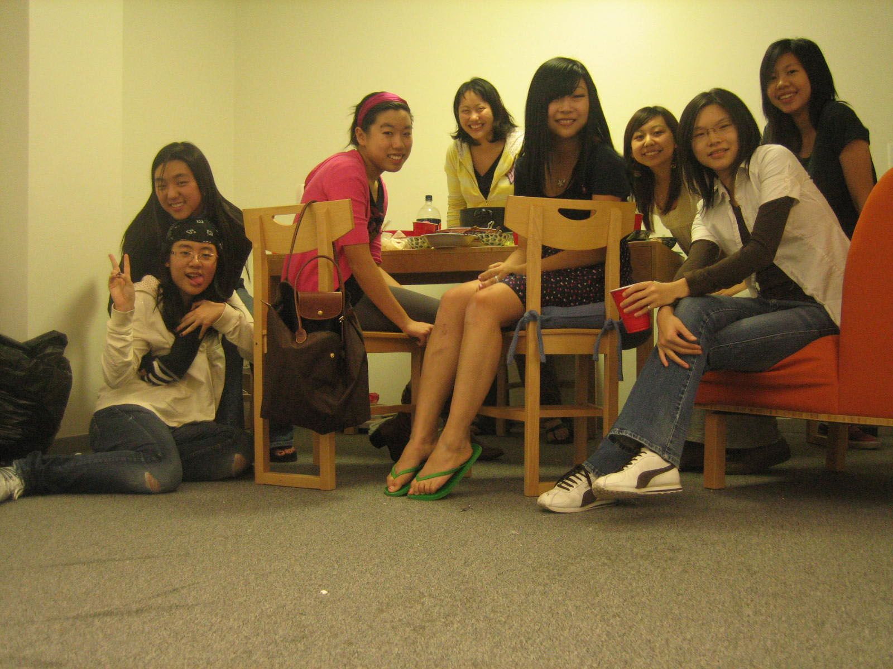
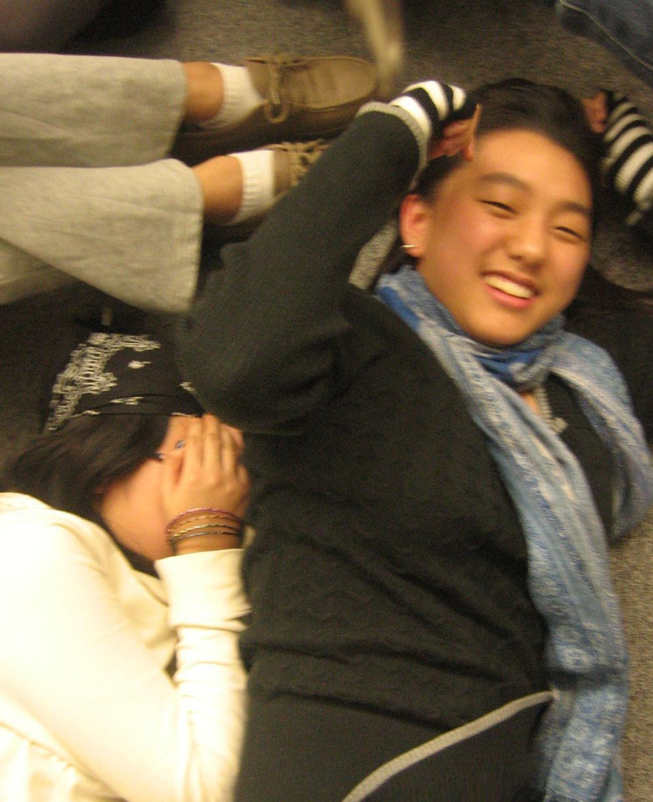
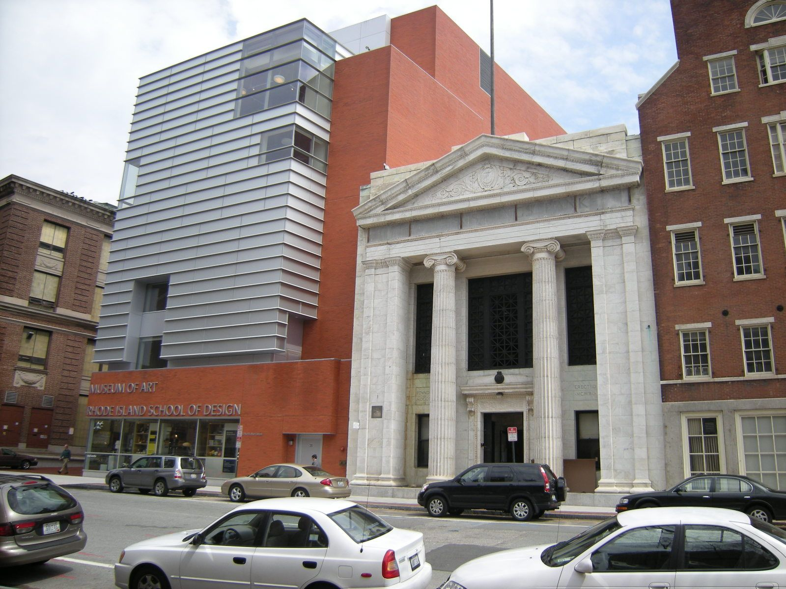
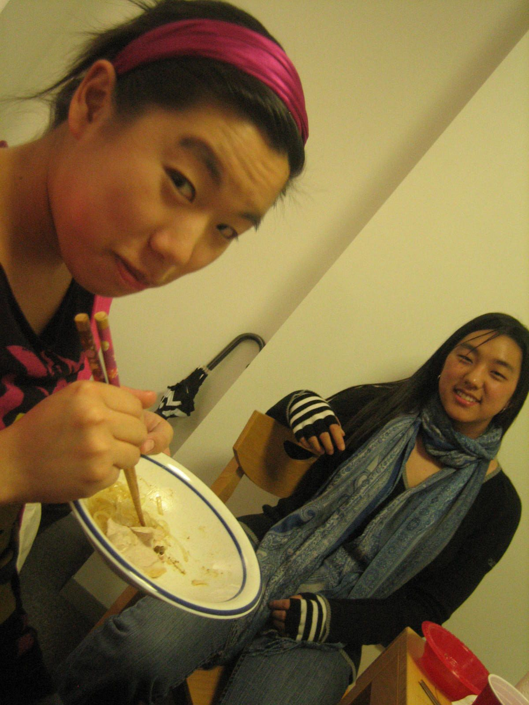

罗德岛设计学院属下莎伦学生俱乐部成绩显着
“设计界的哈佛大学”——罗德岛设计学院（RISD）是全美排名第一的美术设计学院，莎伦学生每年有一、二十位被该校录取。在RISD，每年仅有144——400位新生入读，因此莎伦学生被录取比率很高，并含华、韩、印、欧等种族。他们都在RISD的班级成绩排名第一，在各专业成绩排名前三位……RISD校方不得不重视这股力量，破例成立官方的莎伦学生俱乐部（全称：RISD Sharron Art & Design student club），因多年来RISD已不再批准新俱乐部成立。

10月9日，RISD的莎伦学生俱乐部部分成员在RISD校友与学生作品展销会上推出各式自己的创意作品，销售不俗，杰出者且获得RISD校长表彰。在创业路上尝试起步，莎伦画院给予一系列人生与事业规划建议，因此RISD毕业生不少遵循教导，再赴常春藤名校攻读企管硕士及法律专业，未来将在与此相关的艺术领域大展宏图。RISD莎伦俱乐部主席Celia已预备毕业后赴哈佛大学攻读企管硕士学位，她在今年夏天赴北京与天津的游戏设计公司做3个月实习工作，另有莎伦的RISD学生赴上海城市规划公司、臺湾建筑设计公司等地实习，或留在美国的莎伦艺术中心有薪实习。帮助及安排大学生有薪实习，无偿提供各种工作培训、创业辅导、帮助人格塑造、人生目标建立……莎伦画院不仅仅教育学生从4岁至大学的学习，更关注提携学生一生的发展。

帮助、资助经济困难的学生完成在画院的学习及大学和研究所学业也是画院的义务工作之一。刘莎伦总校长个人每年都汇钱让RISD的莎伦俱乐部开展活动，让学生能相互扶持进步。今年9月开学，该俱乐部举办两次欢迎莎伦学生的派对，有些学生生日派对也由刘总校长汇款委託俱乐部负责人举办……

俱乐部成员时常回莎伦母校举办作品观摩，SAT和申请大学讲座，申请大学作品Review，提供给莎伦学生不少方便，因为每年的“国家作品集日“，来自全球的美国美术大学申请者涌入纽约，想让RISD的学生代表为其看作品，得排队约4小时。而莎伦管理团队给予的仔细分析建议，往往比RISD官方派出的师生代表所给的评价更中肯精确。
莎伦画院每年帮助的学生皆进入第一志愿名校，其中很多在大学并不读艺术，但画院坚持以RISD最高的入学标准培训学生，因此能平均以200以上的加分进入常春藤及同等名校就读艺术或非艺术专业。

画院核心领导包括海外董事会成员都是虔诚的基督徒，毕业于芝加哥商学院、宾州大学华顿商学院、普林斯顿大学、罗德岛设计学院……其中创意总监韩裔的崔明子曾任罗德岛设计学院属下的莎伦学生俱乐部主席，其辞退波士顿鞋业设计大公司的工作回到莎伦母校全职工作，同时负责莎伦臺湾公司的创意辅导，她的领袖才能在莎伦画院学习期间已得到发掘，莎伦画院的管理、教学团队青年成员都是这样培养成长的。明年将有部分老师重回大学就读硕士学位。
(2011)